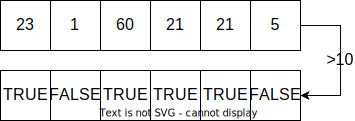

4 < 5[1] TRUE6 > 2[1] TRUELogical Operators are essential to efficiently work with R. It is a good idea to spent some time with them and think about their possibilities and usage.
But first: What are logical operators? They are used to compare two values. The most intuitive ones are the < and > operators, for less than and larger than respectively.
4 < 5[1] TRUE6 > 2[1] TRUEAs you see, both statements return the value TRUE because, — well — 4 is smaller than 5 and 6 is larger than 2. As you might guess, if there is TRUE there should also be a FALSE.
24 > 50[1] FALSELogical operators will always return TRUE or FALSE, so the statements you make with them are always questions which you can answer as TRUE or FALSE. As a data type, this is called a logical (or sometimes boolean after the British mathematician George Boole).
bool <- 24 < 50
class(bool)[1] "logical"To ask the question if two values are the same we use the operator ==. Be careful to not confuse this with the assignment operator =.
1.9999999 == 2[1] FALSEa = 5 # one '=' means assignment
a == 5 # two '==' is the logical operator for "is equal"[1] TRUELogical operators are vectorized. This means that when we ask the question “Is the vector larger than 10?”, we get as many TRUE and FALSE answers as there are elements in the vector.

vec = c(23, 1, 60, 21, 21, 5)
vec > 10[1] TRUE FALSE TRUE TRUE TRUE FALSEIf we safe these answers in the a new variable, we can use the result to subset the vector. So the questions “Is the vector larger than 10?” serves as an important step to do the operation “Give me all the numbers of this vector that are larger than 10!”.
large = vec > 10
vec[large][1] 23 60 21 21# in short, we combine both steps to
vec[vec > 10][1] 23 60 21 21Comparative operators:
== |
equal |
!= |
not equal |
< |
less than |
<= |
less than or equal |
> |
greater than |
>= |
greater than or equal |
%in% |
is in the set |
There are also functions that test for certain conditions, for example if a value is of a particular class. Particularly common is the is.na() function to check for missing values.
is.numeric(5)[1] TRUEis.logical(5)[1] FALSEvec = c(1, 8, 8, NA, 6, NA, 7)
# vectorized
is.na(vec)[1] FALSE FALSE FALSE TRUE FALSE TRUE FALSE# simple check if vector contains any NA value
anyNA(vec)[1] TRUEHow can we get rid of the NA values in this vector?
If you want to test multiple statements at once, you’ll need the following operators.
| |
or |
& |
and |
! |
not |
To be on the safe side, use parenthesis for the individual logical statements.
vec = c(1, 8, 8, 6, 7)
(vec > 5) & (vec < 8)[1] FALSE FALSE FALSE TRUE TRUE!anyNA(vec) & max(vec) > 5[1] TRUE